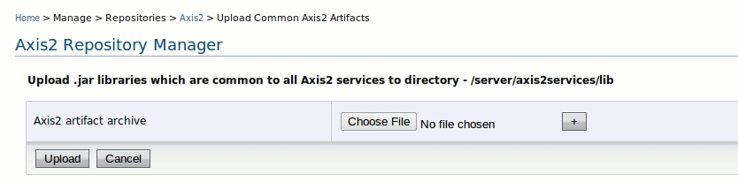
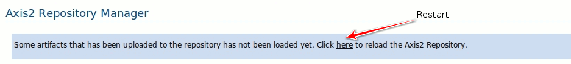

The WSO2 SOA platform has the capability of deploying Axis2 services service as an archive file. You can bundle all your service-related resources, service classes, and third-party libraries and then deploy the archive file. Some of these service archives might require additional libraries, which could be shared between multiple service archives. The Axis2 Repository Manager provides the ability to upload these common libraries to the Axis2 Repository and remove uploaded shared libraries that are no longer necessary.
To upload shared libraries all that need to be done is clicking on the Add Artifact link next to the relevant lib directory icon. This will upload libraries that can be used by Axis2 artifacts that are deployed under the Parent directory of that particular lib directory.
For example, uploading libraries to the lib directory of axis2services will upload libraries that would be shared by Axis2 artifacts deployed under axis2services directory etc. Clicking on the Add Artifact link will redirect you to the Artifact upload page. This page displays the Axis2 service type that could share the particular library that is being uploaded and the directory structure of where the library is being saved to.
Selecting the axis2services directory's lib to upload libraries will redirect to an upload page as displayed in the below.

Multiple artifacts can be uploaded at once by clicking the + button.
To delete a artifact, you simply need to click on the trash can icon next to library, as shown in the image below.
In order to load the newly uploaded common libraries, the Axis2 server should be restarted. If a restart is required, a message will be displayed prompting to restart the Axis2 server. In order to restart the Axis2 server, simply click on the link that appears along with the message.

Note that the restart option will be available only if libraries has been uploaded via the Axis2 Repository Manager, but the Axis2 server has not been restarted.